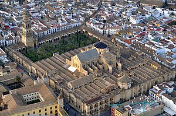

La mezquita
La mezquita-catedral de Córdoba,12 Santa María Madre de Dios» o «Gran mezquita de Córdoba», actualmente conocida como la Catedral de la Asunción de Nuestra Señora de forma eclesiástica, es un edificio de la ciudad de Córdoba, España. En 2019 superó los dos millones de visitantes, siendo su récord histórico y convirtiéndolo en uno de los monumentos más visitados de España.3
Se empezó a construir como mezquita en el año 784; hasta hace poco se creía que tras la apropiación por los conquistadores musulmanes de la basílica hispanorromana de San Vicente Mártir4 y la reutilización de parte de los materiales, quedando reservada al culto musulmán, pero los estudios arqueológicos más recientes descartan esta hipótesis.5 El edificio fue objeto de ampliaciones durante el Emirato de Córdoba y el Califato de Córdoba. Con 23 400 metros cuadrados, fue la segunda mezquita más grande del mundo en superficie, por detrás de la Mezquita de La Meca, siendo superada posteriormente por la Mezquita Azul (Estambul, 1588). El muro de la qibla no fue orientado hacia La Meca, sino 51º grados hacia el sur; esto era habitual en las mezquitas de al-Ándalus.
En 1238, tras la Reconquista cristiana de la ciudad, se llevó a cabo su consagración como catedral de la diócesis con la Ordenación episcopal de su primer obispo, Lope de Fitero.6 El edificio alberga el cabildo catedralicio de la Diócesis de Córdoba, y por su carácter de templo católico y sede episcopal, está reservado al culto católico. En 1523, bajo la dirección de los arquitectos Hernán Ruiz, el Viejo y su hijo, se construyó su basílica cruciforme renacentista de estilo plateresco.Hoy todo el conjunto constituye el monumento más importante de Córdoba, y también de toda la arquitectura andalusí, junto con la Alhambra, así como el más emblemático del arte omeya hispanomusulmán. Declarada como Bien de interés cultural2 y Patrimonio Cultural de la Humanidad como parte del centro histórico de la ciudad,7 se incluyó por el público entre los 12 Tesoros de España en 20078 y fue premiada como el mejor sitio de interés turístico de Europa y sexto del mundo según un concurso de TripAdvisor.9
Según la tradición, en el solar de la actual Mezquita-catedral de Córdoba estuvo originalmente una iglesia cristiana dedicada a San Vicente Mártir,10 que fue dividida y compartida entre cristianos y musulmanes tras la conquista islámica de la península ibérica.11 Con el aumento de la población islámica, el emir Abderramán I decidió en 785 comprar la estructura al completo y demolerla12 para construir la nueva mezquita;13 a cambio, permitió a los cristianos reconstruir otras iglesias en ruinas, incluidas las de los mártires San Fausto, Januario y Marcial, que gozaban de gran devoción en la época.14 La historicidad de estos eventos ha sido discutida,12 debido a que las evidencias arqueológicas son escasas y no se ha podido comprobar con hechos posteriores a la llegada de Abderramán a la península. El relato de la iglesia siendo reconvertida en mezquita, que es desarrollado por el historiador del siglo x Al-Razi, alberga muchas similitudes con la conquista musulmana de Siria, en particular con la construcción de la Mezquita de los Omeyas en Damasco. Para los historiadores medievales, estos paralelos servían para enaltecer la conquista omeya de la península y la apropiación de la Córdoba visigoda.1115 Otra fuente del siglo x menciona una iglesia que se levantó en el centro de la mezquita, sin dar muchos más detalles.15 Una exposición arqueológica actual en la Mezquita-catedral muestra fragmentos de un edificio tardoantiguo o visigodo excavado por el arquitecto Félix Hernández en 1930, enfatizando el carácter cristiano del monumento.16175 Según Susana Calvo Padilla, especialista en la historia de la Mezquita-catedral, aunque se han encontrado los restos de estructuras similares a iglesias, no existen evidencias arqueológicas suficientes de que se haya encontrado la iglesia de San Vicente. Parece que los restos tendrían más relación con un complejo episcopal que con una iglesia que fue dividida entre musulmanes y cristianos.18 Pedro Marfil, arqueólogo de la Universidad de Córdoba, ha interpretado también los restos encontrados como un complejo episcopal que quizás albergara una basílica.192021 Sin embargo, esta teoría parece estar equivocada según el arqueólogo Fernando Arce-Sainz, que declara que ninguno de los restos analizados alberga una iconografía cristiana, ni siquiera de un cementerio, que apoyara que existiera una iglesia.22 La historiadora del arte Rose Walker, ha criticado que Pedro Marfil se basa en interpretaciones personales.23 A pesar de las dudas del tipo de estructura que se encuentra en el substrato, es casi seguro que Abderramán destruyó el antiguo edificio para construir la nueva mezquita y que no tuvo relación con la forma anterior.1224